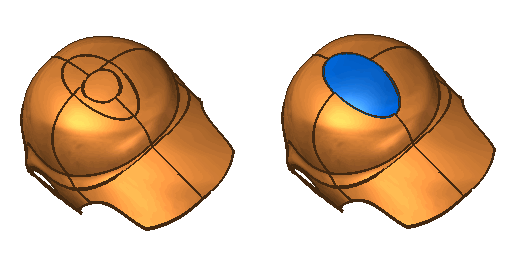
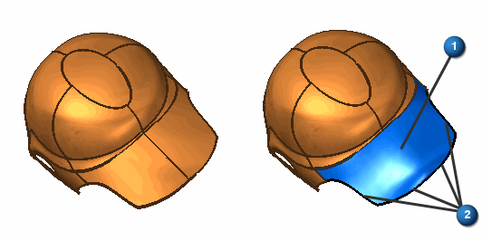

Redefine Surface command
Use the Redefine surface command  to create a new surface by replacing existing model faces with a bounded surface.
to create a new surface by replacing existing model faces with a bounded surface.
The following example uses the Redefine Surface command to replace the five surfaces that form the elliptical shape on the crown of the helmet.

-
The model faces which are replaced must be contiguous, non-manifold, and have no interior loops.
-
The boundary of the new surface is defined by edges of the face bounding the input faces. The open edges of the input face are defined by key point curves produced in the command. In the following example 1 is the replaced surface and 2 shows the key point curves generated by the Redefine Surface command.

-
The boundary of the new surface is connected to the edges of the existing bounding faces.
-
Once the new surface is created, it is a composite of the input faces and edges of the bounding faces. New sketches may be added to further alter or refine the feature.